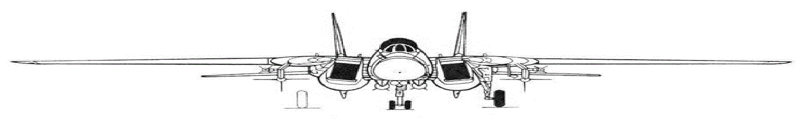

(Grumman) Tomcat (aka F-14) - американский тяжелый (здесь не уверен) двухмоторный двухместный реактивный палубный сверхзвуковой многоцелевой истребитель-перехватчик четвертого поколения с изменяемой стреловидностью (геометрией) крыла, послевоенных времен соответственно
